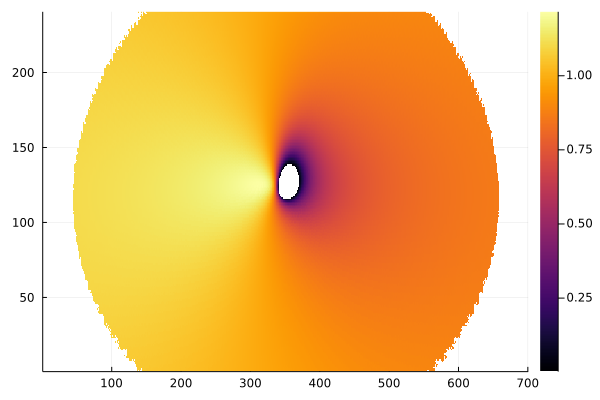
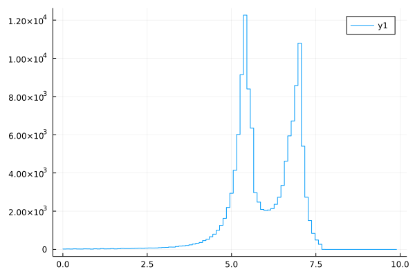
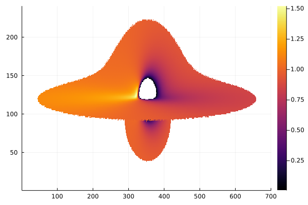

Examples
Redshift image
The Gradus.ConstPointFunctions.redshift function is an analytic solution for redshift, which may not be implemented for every type of metric or disc geometry. See Interpolating redshifts for a more flexible numeric alternative.
using Gradus
using StaticArrays
using Plots
# metric and metric parameters
m = BoyerLindquistAD(M=1.0, a=1.0)
# observer position
u = @SVector [0.0, 1000.0, deg2rad(60), 0.0]
# accretion disc
d = GeometricThinDisc(1.0, 50.0, deg2rad(90))
# define point function which filters geodesics that intersected the accretion disc
# and use those to calculate redshift
pf = Gradus.ConstPointFunctions.redshift ∘ Gradus.ConstPointFunctions.filter_intersected
img = rendergeodesics(
m,
u,
d,
# maximum integration time
2000.0,
fov_factor = 6.0,
image_width = 700,
image_height = 240,
verbose = true,
pf = pf
)
heatmap(img)
Line profile
Using the redshift example, we can bin a line-profile using StatsBase.jl. We'll calculate the iron line profile, with a delta-emission at 6.4 keV.
using StatsBase
# remove nans and flatten the redshift image
redshift_data = filter(!isnan, vec(img))
# transpose to iron-line
data = redshift_data .* 6.4
x_bins = range(0.0, 10.0, 100)
lineprof = fit(Histogram, data, x_bins)
plot(x_bins[1:end-1], lineprof.weights, seriestype = :steppre)
Interpolating redshifts
In cases where no analytic redshift solution is known, we can instead interpolate a numeric approximation. For example, interpolating the plunging region velocities and using the analytic solution for general static, axis symmetric metrics outside of the ISCO can be achieved with:
using Gradus
using StaticArrays
using Plots
# metric and metric parameters
m = BoyerLindquistAD(M=1.0, a=0.4)
# observer's initial position
u = @SVector [0.0, 1000.0, deg2rad(85), 0.0]
# accretion disc
d = GeometricThinDisc(1.0, 50.0, deg2rad(90))
pl_int = interpolate_plunging_velocities(m)
redshift = interpolate_redshift(pl_int, u)
pf = redshift ∘ Gradus.ConstPointFunctions.filter_intersected
img = rendergeodesics(
m,
u,
d,
# maximum integration time
2000.0,
fov_factor = 6.0,
image_width = 700,
image_height = 240,
verbose = true,
pf = pf
)
heatmap(img)
For more complex disc geometry: TODO